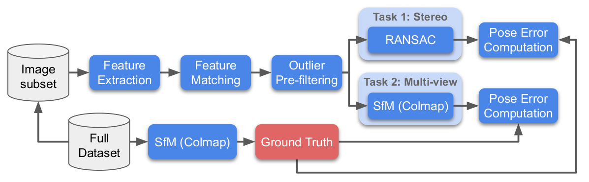
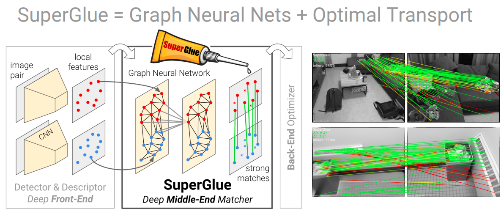
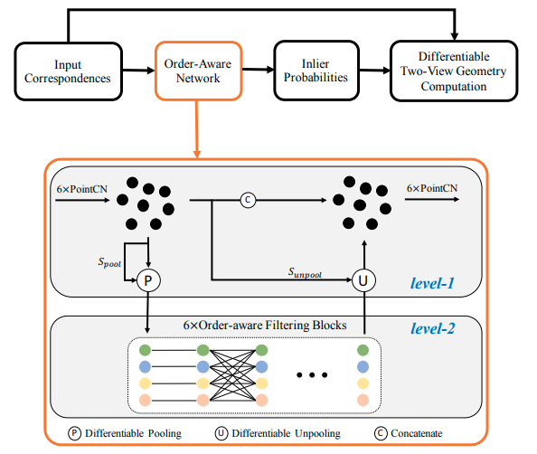
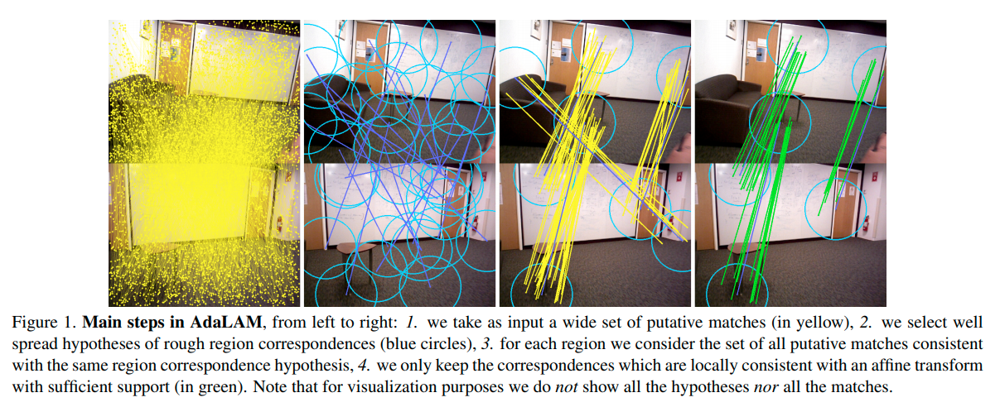
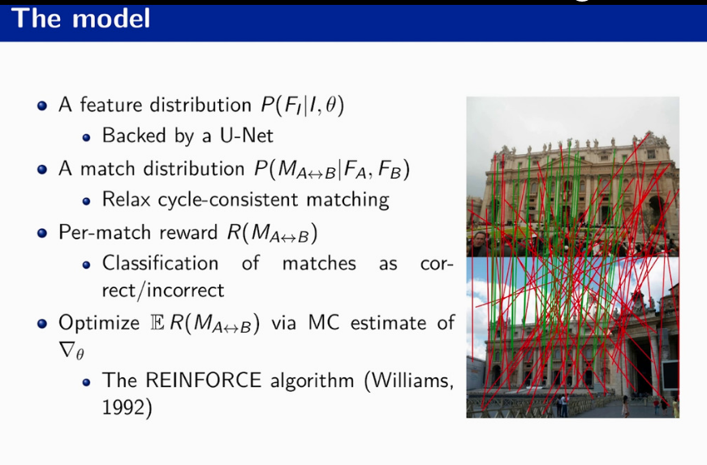
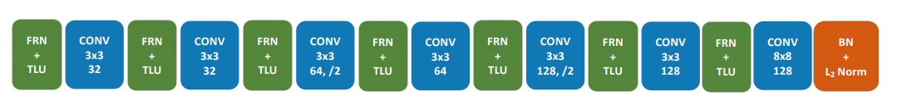
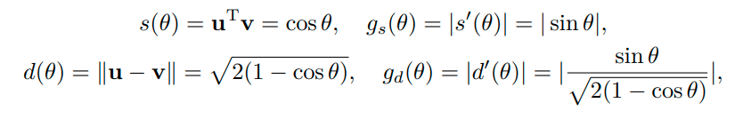
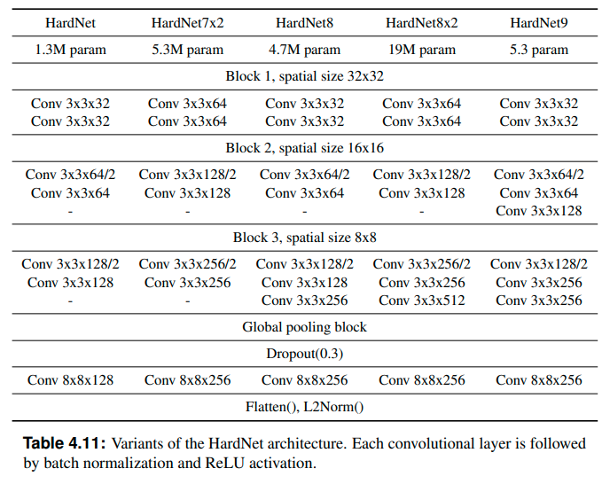
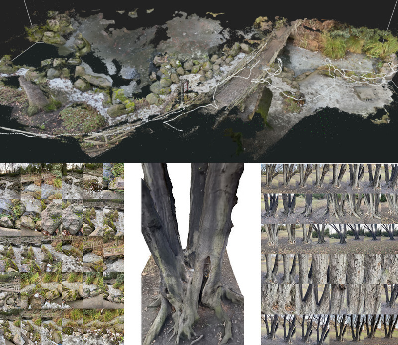
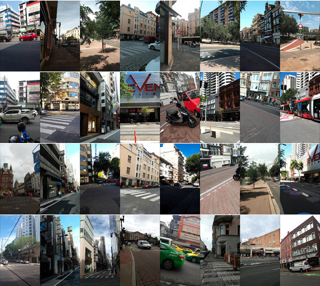

What is Image Matching Challenge?
Image Matching Challenge is an on-going benchmark of the local features, matching methods and RANSACs, held since 2019. Its main idea is to measure a downstream metric of the image matching pipeline, such as camera pose accuracy after a careful hyperparameter tuning.

Before the challenge we have benchmarked existing popular and recent methods, such as (Root)SIFT, ORB, HardNet, SuperPoint, R2D2, D2Net, etc, and published a paper called “Image matching across wide baselines: From paper to practice”.
The best results were obtained by a combinination of difference-of-Gaussians (DoG) local feature detector, commonly referred as SIFT detector, with deep learned patch descriptor such as HardNet, SOSNet, or AffNet-HardNet.
Let’s check what was proposed by the challenge participants.
Top solutions-2020 and follow-ups
SuperGlue

SuperGlue is an attention-based graph neural network for matching local features, taking into account both geometry (keypoint location) and appearance (descriptor). Unlike previous works, e.g. CNe, or OANet below, it does not “scoring-and-cleaning” already established tentative correspondences. Instead, it establishes the correpondences given the local features from two images. SuperGlue won IMC-2020, as well as two other competitions at CVPR 2020. Its inference implementation is available here.
OANet
 OANet is an specialized neural network architecture for “scoring-and-cleaning” already established tentative correspondences. OANet was run on top of DoG-HardNet local features. Pytorch version of OANet is available here
AdaLAM

AdaLAM is a handcrafted algorithm for tentative correspondence cleaning, which work comparably or even better than a learning-based approaches. It is based on two core assumptions:
- Keypoints, which are near from each other are probably corresponding to the neaighboring keypoints in the other images
- If keypoints are in correspondence, it means that their orientation and scale are also in correspondence. Check my post Local affine features: useful side product for an explanation
The implementation is avilable here. As DoG+HardNet were used as a local features.
DISK

DISK is local feature, which has two main differences from the rest of competitors (SuperPoint, R2D2):
- DISK is trained with a reinforcement-learning objective
- DISK has UNet-like architecture, unlike VGG-style for the rest of the features.
Its implementation is available here.
HyNet
 HyNet is an next stage in the L2Net-HardNet-SOSNet series of local patch descriptors. It is different from the previous works in two ways:
- BatchNorm and ReLU in the HardNet architecture are replaced with FRN and TLU respecively.
- During training, distance to the negative (non-matching) \(d(\theta)\) and positive (matching) \(s(\theta)\) samples are calculated in a different way for better learning, see image below. u and v denote descriptors is

HyNet submission also used semantic segmentation network to remove the keypoints from the non-matchable areas, such as sky and water.
HardNet8

HardNet8 is another improvement of the HardNet architecture:
- Deeper and wider network
- The output is compressed with a PCA.
- The training set and hyperparameters are carefully selected.
It is available in kornia
2021 challenge
This year challenge brings 2 new datasets: PragueParks and GoogleUrban.
The PragueParks dataset

The PragueParks dataset contains images from video sequences captured by the organizers with an iPhone 11, in 2021. The iPhone 11 has two cameras, with normal and wide lenses, both of which were used. Note that while the video is high quality, some of the frames suffer from motion blur. These videos were then processed by the commercial 3D reconstruction software RealityCapture, which is orders of magnitude faster than COLMAP, while delivering a comparable output in terms of accuracy. Similarly to we did for the “PhotoTourism” dataset, this data is then subsampled in order to generate the subsets used for evaluation.
The dataset contains small-scale scenes like tree, pond, wooden and metal sculptures with different level of zoom, lots of vegetation, and no people. The distribution of its camera poses differs from Phototourism.
The GoogleUrban dataset

The GoogleUrban dataset contains images used by Google to evaluate localization algorithms, such as those in Google’s Visual Positioning System, which powers Live View on millions on mobile devices. They are obtained from videos collected from different cell phones, on many countries all over the world, often years apart. They contain poses, but not depth maps. Please note that due to legal reasons, this data is released with a restricted license, and must be deleted by the end of the challenge.
Submit your solution!
You can check out the tutorial on how to submit to IMC 2021 in the post Submitting to Image Matching Challenge 2021. Good luck!
Everything you (didn’t) want to know about image matching